1. Bắt đầu: từ con số 0 tới lúc đăng nhập
Làm một lần, khoảng 10–15 phút (bản Cá nhân).
Cần bản ngắn, mỗi bước một ảnh, có video: Cài BDS Studio trên máy tính.
Bước cài làm trên máy tính (Windows hoặc Mac, trình duyệt Chrome, Edge hoặc Safari). Không cài phần mềm.
Điện thoại và máy tính bảng (cả iPad) không cài được: app Google Sheets trên điện thoại không có mục Tiện ích mở rộng › Apps Script.
Mở trang cài đặt trên điện thoại thì trợ lý hiện thẻ Cài trên máy tính có nút Chép link – gửi link sang máy tính rồi cài ở đó.
Cài xong, dùng app trên điện thoại bình thường (bấm Tôi đã cài rồi – đăng nhập trên máy này, xem Cài app ra màn hình chính).
Anh/chị cần có
- Một tài khoản Google (Gmail). Dữ liệu khách sẽ nằm trong tài khoản này.
- Địa chỉ app riêng do bên bán gửi, ví dụ
tenkhach.bdsstudio.app. - Một email để nhận mã xác nhận (có thể là chính Gmail trên).
Dữ liệu nằm trong Google của anh/chị. Bên bán không xem được.
Cách nhanh: Cài bằng Google (3–5 phút)
Mở link trang cài đặt cai.bdsstudio.app (trên máy tính hoặc điện thoại), chọn Cá nhân. Bước Tạo máy chủ có sẵn Cài nhanh bằng Google:
- Bấm Cài bằng tài khoản Google → chọn Gmail → Google ghi "chưa xác minh" thì bấm Nâng cao → Đi tới BDS Studio → Tiếp tục.
- Trang báo cần bật Apps Script API: bấm Mở trang bật Apps Script API → gạt Google Apps Script API sang Bật → quay lại thẻ BDS Studio. Trang tự thử lại.
- Bấm Cho phép máy chủ chạy → Xem lại quyền → chọn Gmail → Nâng cao → Đi tới … (không an toàn) → Cho phép → quay lại thẻ BDS Studio.
Trang tự sang Tạo tài khoản. Đặt mật khẩu xong, bấm Vào dùng app ngay để bỏ qua các bước tuỳ chọn (làm sau được).
Trang báo hết chỗ "Cài bằng Google" thì làm theo cách thủ công bên dưới.
Cách thủ công: Tạo bản sao (7 bước)
- Mở app, chọn Cá nhân.
- Tạo bản sao Sheet mẫu.
- Trong Sheet: menu BDS Studio › Cài đặt.
- Triển khai máy chủ: Ứng dụng web, quyền Bất kỳ ai.
- Chép địa chỉ
/exec, mở app bằng nút Mở BDS Studio và kết nối. - App tự nối máy chủ.
- Tạo tài khoản bằng email + mã 6 số.
Bước 1. Mở app và chọn loại
- Mở địa chỉ app riêng bên bán gửi.
- Trợ lý cài đặt hiện ra.
- Bấm Cá nhân (Cá nhân = 1 người dùng).
Công ty có nhân viên thì bấm Công ty (nhiều người; dùng thử tối đa 10 người) và làm cùng bên cài đặt (11 bước, xem mục Bản Công ty cuối trang).
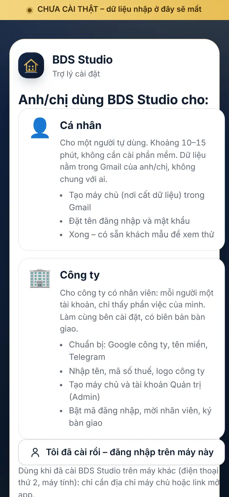
Dải vàng "CHƯA CÀI THẬT" ở đầu màn là bình thường.
Dải này tự mất khi nối xong máy chủ.
Bước 2. Tạo bản sao Sheet mẫu
- Ở bước Tạo máy chủ, bấm Tạo bản sao.
- Trang Google mở ra. Kiểm tra góc phải: đúng tài khoản Google muốn dùng.
- Bấm Tạo bản sao (Make a copy).
- Sheet mới mở ra. Đây là máy chủ của anh/chị.
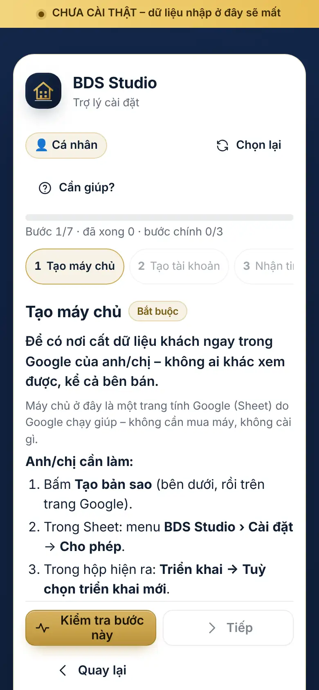
Trong app, phần Cách làm có ảnh minh hoạ từng cú bấm trên trang Google.
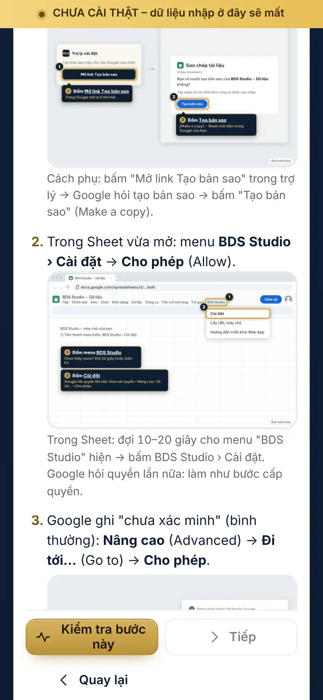
Bước 3. Menu BDS Studio › Cài đặt
- Trong Sheet vừa tạo, chờ 10–20 giây.
- Trên thanh menu, bấm BDS Studio.
Chưa thấy menu? Bấm F5 (tải lại trang) rồi chờ thêm. - Bấm Cài đặt.
- Google hỏi quyền. Bấm Tiếp tục, chọn tài khoản của mình.
- Google ghi "chưa xác minh". Đây là bình thường.
- Bấm Nâng cao (Advanced).
- Bấm Đi tới… (Go to…).
- Bấm Cho phép (Allow).
- Bấm lại BDS Studio › Cài đặt nếu hộp chưa hiện.
Hộp "BDS Studio – Triển khai máy chủ" hiện ra. Để hộp này mở.
Bước 4. Triển khai máy chủ (1 lần)
- Trên Sheet, bấm Tiện ích mở rộng › Apps Script (Extensions › Apps Script).
- Góc phải, bấm Triển khai (Deploy).
- Bấm Tuỳ chọn triển khai mới (New deployment).
- Bấm bánh răng ⚙ cạnh Chọn loại.
- Chọn Ứng dụng web (Web app).
- Ô Thực thi: chọn Tôi (Me).
- Ô Người có quyền truy cập: chọn Bất kỳ ai (Anyone).
- Bấm Triển khai (Deploy).
- Google hỏi quyền: bấm Uỷ quyền truy cập (Authorize access), chọn Gmail của mình.
- Google ghi "chưa xác minh": bấm Nâng cao (Advanced) → Đi tới … (không an toàn) (Go to … unsafe) → Cho phép (Allow).
Vì sao? Đây là bản sao của chính anh/chị, nằm trong Drive của anh/chị – Google chỉ xác minh ứng dụng phát hành cho nhiều người. Kiểm tra email hiện ra là email của mình. Bên bán không xem được dữ liệu.
Lưu ý:
- Mục Quản lý triển khai trống là bình thường. Bản sao Sheet không mang theo triển khai. Phải bấm Tuỳ chọn triển khai mới.
- Chọn sai Bất kỳ ai thì app không nối được. Cách sửa ở 05_LOI_THUONG_GAP.md.
- Tài khoản Google công ty không cho chọn Bất kỳ ai: nhờ quản trị viên cho phép.
Bước 5. Chép địa chỉ /exec
- Hộp Triển khai mới hiện URL ứng dụng web.
- Bấm Sao chép (Copy).
Địa chỉ đúng có dạnghttps://script.google.com/macros/s/…/exec. - Bấm Xong (Done).
- Quay lại thẻ Sheet.
- Trong hộp Triển khai, bấm Tôi đã triển khai xong.
Hộp vẫn báo chưa thấy? Mở mục Đã triển khai mà vẫn chưa thấy nút?, dán địa chỉ vào ô, bấm Dùng URL này.
Giữ địa chỉ /exec riêng tư. Đừng gửi lên nhóm chat.
Bước 6. Nhập địa chỉ app
Hộp có thể hỏi địa chỉ app riêng của anh/chị. Khi đó:
- Gõ địa chỉ bên bán gửi, ví dụ
tenkhach.bdsstudio.app.
Gõ phần têntenkhachlà đủ. - Bấm Lưu và mở BDS Studio.
Hộp nhớ địa chỉ này cho lần sau.
Chưa có địa chỉ app riêng? Hộp có nút Quay lại trang cài đặt và kết nối – bấm là Trợ lý ở trang cài đặt tự nối máy chủ (địa chỉ app riêng được tạo ngay sau khi đặt mật khẩu).
Bước 7. Mở app và để app tự nối
- Bấm nút to Mở BDS Studio và kết nối.
- App mở ở thẻ mới, địa chỉ có đoạn
#/ket-noi. - App báo "Đã nhận địa chỉ máy chủ từ Sheet".
- Bấm Cá nhân (hoặc Công ty).
- App tự điền địa chỉ, tự kiểm, rồi tự sang bước Tạo tài khoản.
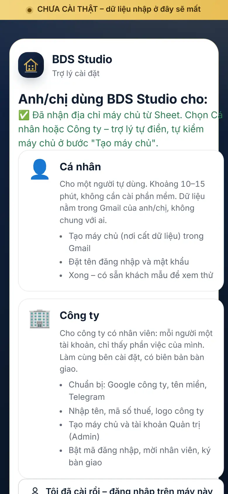
Không tự mở? Cách dự phòng:
- Trong hộp của Sheet, mở Không mở được? Chép địa chỉ máy chủ.
- Bấm Chép URL.
- Trong app, ở bước Tạo máy chủ, dán vào ô Địa chỉ máy chủ (kết thúc bằng /exec).
- Bấm Kiểm tra bước này.
- Thấy dòng ✅ thì bấm Tiếp.
Bước 8. Tạo tài khoản: email + mã
Mở app bằng nút Mở BDS Studio và kết nối hoặc Quay lại trang cài đặt và kết nối trong hộp của Sheet: app tự điền email tài khoản Google đã cài máy chủ và tên đăng nhập, không hỏi mã email – chỉ đặt mật khẩu. Các dòng dưới dành cho khi dán địa chỉ máy chủ bằng tay.
- Gõ email vào ô Email của anh/chị (bắt buộc).
- Bấm Gửi mã.
- Mở hộp thư. Thư có tiêu đề "Mã xác nhận email BDS Studio".
- Gõ mã 6 số vào ô. Mã dùng được 15 phút.
- App báo Email đã xác nhận.
- Bấm Tạo tài khoản.
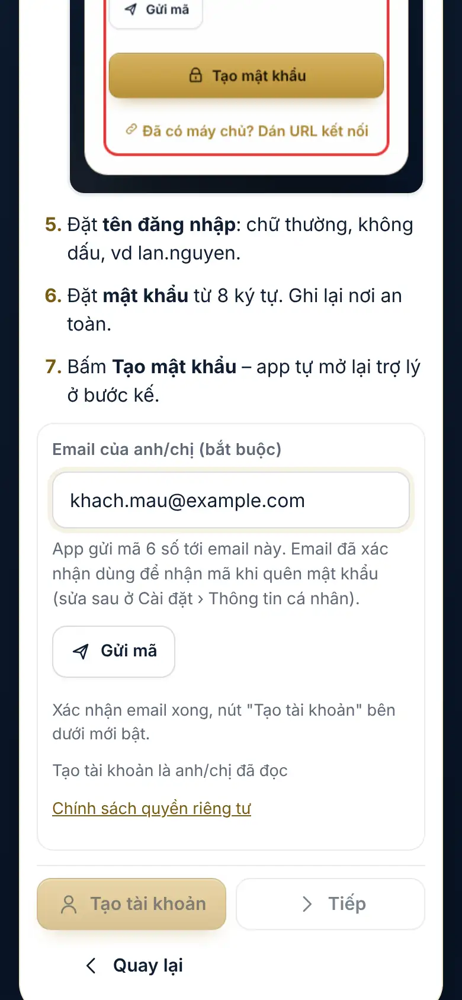
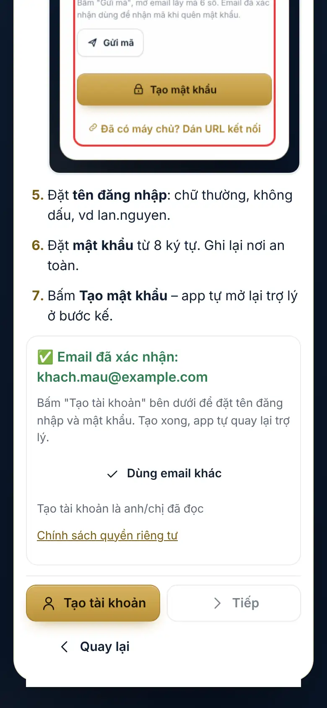
Không thấy thư:
- Xem mục Thư rác/Spam và Quảng cáo.
- Chờ 60 giây, bấm Gửi lại mã.
- Máy chủ báo không gửi được thư? Bấm Dùng email tài khoản Google đang chạy máy chủ (nếu đó là email của anh/chị).
Tiếp theo, đặt mật khẩu:
- Gõ Tên của anh/chị. Ô Số điện thoại của anh/chị bỏ trống được (in trên tin Zalo, landing, báo giá – thêm sau ở Cài đặt › Thông tin cá nhân).
- Gõ Tên đăng nhập: chữ thường, không dấu, ví dụ
lan.nguyen. - Gõ Mật khẩu từ 8 ký tự. Nên có chữ hoa, số, ký tự đặc biệt.
- Gõ lại mật khẩu.
- Bấm Tạo mật khẩu.
- Ghi mật khẩu vào nơi an toàn. Bên bán không lấy lại được mật khẩu.
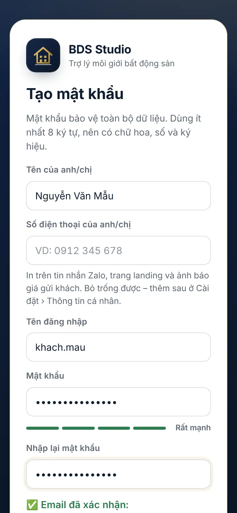
Anh/chị đã đăng nhập.
Bước 9. Các bước tuỳ chọn, rồi Kiểm tra toàn bộ
Sau khi đăng nhập, trợ lý gợi ý vài bước. Bước nào chưa cần thì bấm Bỏ qua bước này.
Bản Cá nhân có 7 bước: Tạo máy chủ, Tạo tài khoản (đã xong ở trên), rồi các bước dưới.
| Bước | Để làm gì | Bỏ qua được? |
|---|---|---|
| Nhận tin qua Telegram | Báo khách mới, nhắc việc | Được |
| Mã dự phòng | Đăng nhập khi mất điện thoại | Được (chưa nối Telegram thì chưa cần) |
| Địa chỉ mở app | Gắn tên miền riêng | Được |
| Bật AI (Gemini) | Các nút AI | Được, xem 03_AI_VA_CHI_PHI.md |
| Kiểm tra toàn bộ | Kiểm mọi phần | Không – bấm Kiểm tra toàn bộ |
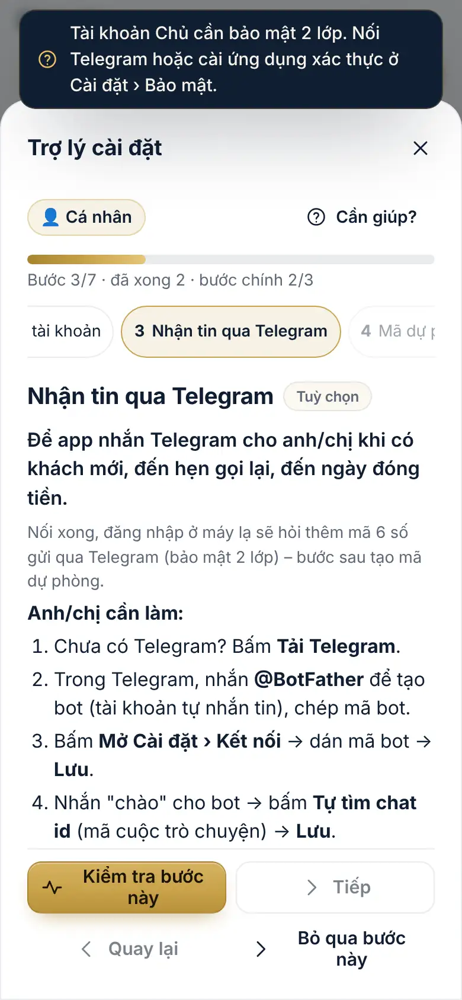
- Ở bước cuối, bấm Kiểm tra toàn bộ.
- Dòng ❌: làm theo Cách sửa ngay dưới dòng đó.
- Bấm Hoàn tất. Màn Cài đặt xong! hiện, kèm hướng dẫn đưa app ra màn hình điện thoại (Cài app ra màn hình chính).
- Bấm Vào dùng app.
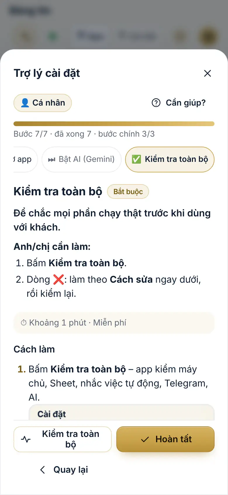
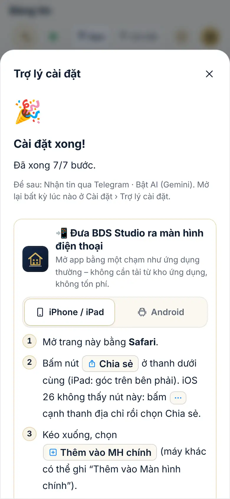
App có sẵn dữ liệu mẫu (tên có chữ "Mẫu").
Xem xong, bấm Xoá toàn bộ dữ liệu mẫu khi muốn.
Bắt đầu ở trang cài đặt (trường hợp khác)
Bên bán có thể gửi link trang cài đặt cai.bdsstudio.app thay cho địa chỉ app.
Khi đó làm như trên. Sau bước tạo tài khoản có thêm bước Chọn địa chỉ app:
- Chọn Dùng địa chỉ miễn phí hoặc Gán tên miền riêng.
- Gõ tên muốn dùng. Chỉ chữ thường không dấu, số, dấu
-. - Chờ dòng ✅ Còn trống.
- Bấm Tạo ngay. Chờ 1–3 phút.
- App tự mở ở địa chỉ mới. Đăng nhập lại ở đó.
Địa chỉ miễn phí ten.bdsstudio.app: 0 đồng.
Tên miền riêng: anh/chị tự trả tiền tên miền.
Bản Công ty: 11 bước của Trợ lý
Bản Công ty làm cùng bên cài đặt. Mỗi bước ghi rõ thời gian và chi phí ngay trong Trợ lý.
Muốn dùng thử trước? Chưa có Google Workspace, tên miền công ty hay bot Telegram vẫn cài thử được: bỏ trống các mục chưa có ở bước Chuẩn bị trước, tạo máy chủ bằng Gmail cá nhân, app chạy ở địa chỉ miễn phí ten.bdsstudio.app, các bước Telegram / Bảo mật 2 lớp / Tên miền công ty bấm Làm sau. Các mục chưa làm hiện ở Kiểm tra toàn bộ và ghi "Chưa làm" trên biên bản bàn giao. Trước khi dùng thật với khách: chuyển máy chủ sang tài khoản Google Workspace do quản trị viên công ty giữ, gắn tên miền công ty, nối Telegram và bật 2 lớp.
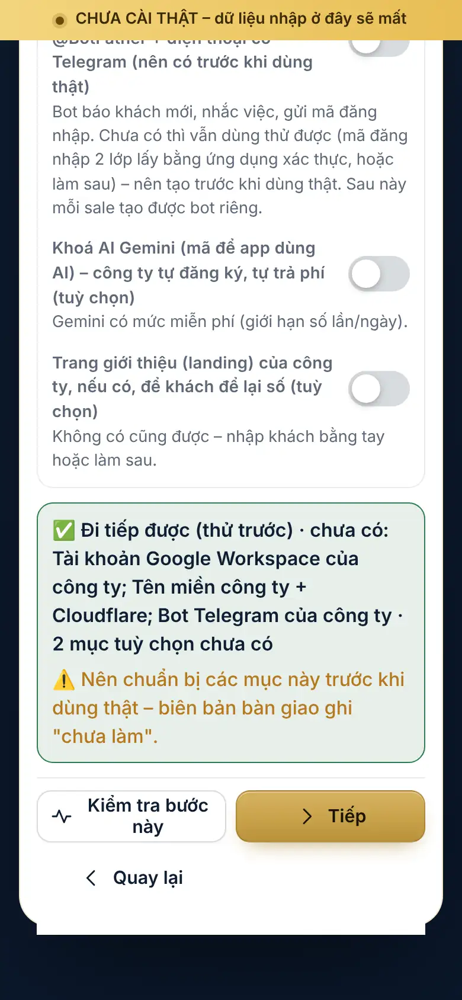
| # | Bước | Bắt buộc? | Ghi chú |
|---|---|---|---|
| 1 | Chuẩn bị trước | Có (không tick gì vẫn qua) | Nên có trước khi dùng thật: Google Workspace của công ty, tên miền + Cloudflare miễn phí, bot Telegram. Dùng thử: bỏ trống mục chưa có |
| 2 | Thông tin công ty | Có | Tên, mã số thuế, logo |
| 3 | Tạo máy chủ | Có | Như bước 2–7 ở trên, nên dùng Google của công ty (dùng thử: Gmail cá nhân được, chuyển sang trước khi dùng thật) |
| 4 | Tạo tài khoản | Có | Tài khoản Quản trị (Admin) |
| 5 | Nhận tin qua Telegram | Có – làm sau được | Gửi mã đăng nhập 2 lớp, báo khách mới. Dùng thử: Làm sau |
| 6 | Bảo mật 2 lớp | Có – làm sau được | Mã qua Telegram hoặc ứng dụng xác thực (Google Authenticator). Dùng thử: Làm sau; bắt buộc trước khi dùng thật |
| 7 | Đội ngũ | Không | Số Sale/Quản lý, gửi lời mời qua email. Chưa cần thì Bỏ qua bước này |
| 8 | Tên miền công ty | Có – làm sau được | Xem dưới. Dùng thử: Làm tiếp sau, app chạy ở địa chỉ miễn phí |
| 9 | Bật AI (Gemini) | Không | Xem 03_AI_VA_CHI_PHI.md |
| 10 | Kiểm tra toàn bộ | Có | |
| 11 | Biên bản bàn giao | Có | Ký cùng bên cài đặt |
Mở từ trang cài đặt cai.bdsstudio.app thì có thêm bước Địa chỉ app công ty ngay sau bước Tạo tài khoản. Công ty chưa có tên miền: chọn Chưa có → dùng thử ở địa chỉ miễn phí ten.bdsstudio.app, gắn tên miền công ty sau (dữ liệu giữ nguyên).
Bước Tên miền công ty – chờ tên miền chạy:
- Trả lời Công ty đã có tên miền chưa?, gõ tên miền.
- Thêm tên miền vào Cloudflare gói Free, đổi nameserver ở nơi mua.
- Đổi nameserver thường mất dưới 1 giờ, lâu nhất 24 giờ.
Trong lúc chờ (hoặc khi chỉ dùng thử, chưa có tên miền), bấm Làm tiếp sau: app lưu tiến độ, anh/chị làm các bước còn lại và dùng app ngay ở địa chỉ miễn phí. - Bước này vẫn ghi chưa xong ⚠ ở danh sách bước, ở Kiểm tra toàn bộ và ở biên bản bàn giao.
- Tên miền chạy rồi: bấm nút Trợ lý cài đặt ở góc màn hình để làm nốt → Kiểm tra bước này.
Dùng trên điện thoại
- Mở địa chỉ app trên điện thoại.
- Đăng nhập bằng tên đăng nhập và mật khẩu vừa tạo.
- Thêm app ra màn hình chính:
- iPhone (Safari): nút Chia sẻ → Thêm vào MH chính.
- Android (Chrome): ⋮ → Thêm vào màn hình chính.
Đăng nhập máy mới có thể hỏi mã 6 số (nếu đã nối Telegram).
Đổi máy: 1 máy tính + 1 điện thoại
Mỗi tài khoản đăng nhập cùng lúc 1 máy tính và 1 điện thoại. iPad, máy tính bảng tính là điện thoại.
- Máy tính + điện thoại: dùng song song, không hỏi gì thêm.
- Đăng nhập máy thứ hai cùng loại (vd điện thoại mới):
- App hiện Xác nhận đổi máy và gửi mã 6 số tới email của anh/chị.
- Mở email, nhập mã, bấm Xác nhận đổi máy. Mã dùng trong 10 phút.
- Máy mới vào app. Máy cũ cùng loại tự đăng xuất.
- Đăng nhập lại trên chính máy đang dùng: không hỏi mã.
- Đăng xuất máy cũ từ xa (mất máy, bán máy): Cài đặt › Bảo mật › Thiết bị → Đăng xuất máy này.
- Bản Công ty: Quản trị xem máy của từng nhân viên ở cùng chỗ đó và đăng xuất giúp được.
Chưa có email trong tài khoản thì không đổi máy được. Thêm email ở Cài đặt › Thông tin cá nhân trước.
Máy bị đăng xuất hiện gì và làm sao: xem 05_LOI_THUONG_GAP.md mục 8.
Tiếp theo: Mục lục hướng dẫn – mỗi việc một trang.